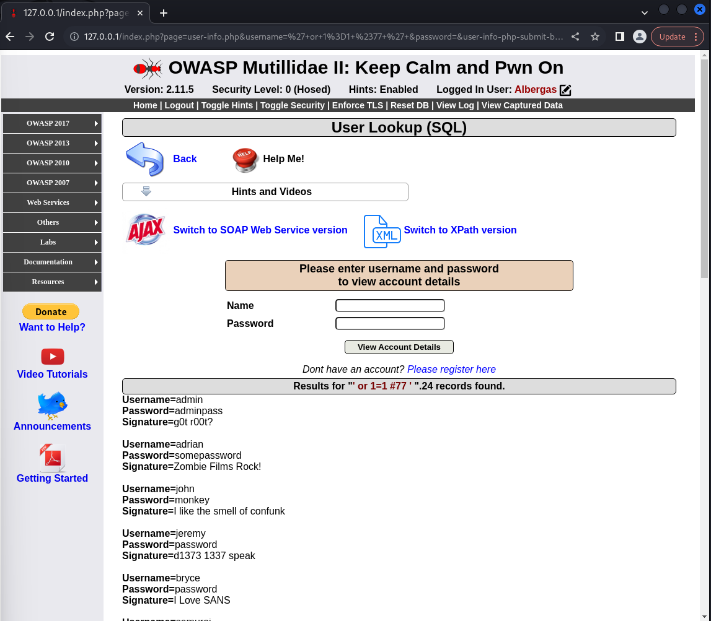

Objective
Through these projects I gained practical experience in many cybersecurity activities by leveraging Kali Linux and Mutillidae to explore and analyze various security vulnerabilities. Using Wireshark, I examined network traffic and incident reports to help build my understanding of incident response. I got hands on practice executing Cross-Site Scripting (XSS) attacks to understand how they are used to infiltrate websites and explored the use of SQL injection techniques to observe their impact on applications and their data integrity. Afterwards I conducted a risk analysis to evaluate the risks of each attack.
Skills Learned
- Practiced Incident Response.
- Practiced using XSS to infultrate websites.
- Learned about ways they affect the program and explored risk analysis on this version problem.
- Explored the possibilities of SQL commands and saw what they could do.
- Practiced using XSS to infultrate websites.
- Worked with Kali Linux.
- used Wireshark to look at incident reports.
Tools Used
- Software: Oracle VM, Kali Linux
- Applications: Wireshark, Mutillidae docker
- Attacks: OWASP Top 10, SQL Injection, Cross-Site Scripting, Cross Site Request Forgery
Activites Done
Screenshots
Ref 1: Sql Injection to get access to the database
Ref 2:Using Cross Site Request Forgery to get account cookies
Ref 3: Using WireShark to intersept the users login and capture there information
Ref 4: Using Nmap to discover vulnerabilites in the Mutillidae docker network